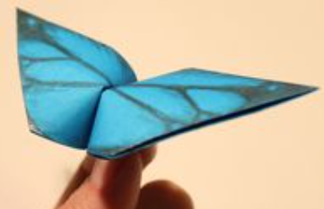
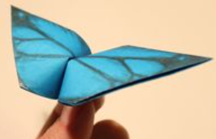

Fact about Bird
Kiwis
Native to New Zealand, kiwis are a bizarre, land-bound bird.
Scientists so mystified by the kiwi's strange properties
which include feathers that feel like hair, heavy bones filled with marrow,
and nostrils on the tip of their nose
(rather than on the base of their beak like most birds)—have sometimes called them "honorary mammals".
Bird!
Step 1:
Start with a square piece of origami paper.
If you only have regular 8.5x11 paper, follow these instructions to make a square sheet.
You can also use these colorful Printable Origami Paper.
Step 2: Fold the paper in half by folding the top corner to the bottom corner. You should have an upside down triangle.
Step 3: Fold part of the top down so that the edge is about halfway down. Don't make this flap too thin because this will become the wings.
Step 4: Turn the paper over.
Step 5: Take the bottom corner of the top layer and fold it up like this.
Step 6: Fold the figure in half by folding the left side over to the right.
Step 7: Now fold that same flap back
like this to make one of the wings.
Step 8: Fold the other wing back also.
Step 9: Push the center of the head in and flatten.
This is called an inside reverse fold.
Step 10: And tada! You have yourself a bird.
Now set it free! Just kidding. Don't throw it in the air. It will just fall down and you'll be disappointed.


Fact about Butterflys
Butterflies use their feet to taste.
If everything up until this point was already a part of your existing butterfly knowledge, this fact may come as a curveball.
However, if you think about it from the butterfly’s point of view, it isn’t that unusual.
A butterfly’s daily activities consist of eating and mating,
of which require landing – even if it is only briefly. When food is the priority,
those taste receptors help the butterfly locate the right plants and the key nutrients it needs for survival.
Although many people wonder what it means when a butterfly lands on them, the truth is that it’s probably just hungry.
ButterFly!
Step 1: Start with a square sheet of origami paper, color side down.
If you only have regular rectangular paper, follow instructions on how to make origami paper.
Step 2: Simply fold the bottom half to the top half,
making sure the edges meet, then unfold.
Step 3: Fold the top and bottom edges to meet at the center.
Step 4: Fold in all four corners so their edges meet at the center horizontal crease.
Step 5: Fold down the top half.
Step 6: Fold the center of the bottom half to the top half.
Crease about one inch (2.5 cm) of the center only with your fingernail.
Do not crease all the way.
your finger and there should be a crease in the center only.
Step 7: Turn the paper over.
Go to Next page to continue learning how to make an origami butterfly that flaps.
Step 8: Place a finger on top of the center of the paper and with your other hand, wrap the paper snugly around your finger.
Step 9: Remove your finger and you should have a loop like this.
Step 10: Use a fingernail and poke in the center of the bottom of the loop.
Step 11: With your forefinger and thumb, grab both ends of the loop holes and pinch them together.
Pinch and release to make the butterfly flap!
Step 12: Draw and design the butterfly wings and email your origami butterfly to me so I can show it off to everybody!
 

Fact about Bird
Pigeon
The common city pigeon (Columba livia), also known as the rock pigeon, might be the first bird humankind ever domesticated.
You can see them in art dating back as far as 4500 BCE in modern Iraq,
and they've been a valuable source of food for thousands of years.
Pigeon!
Step 1:Fold the paper in half and then unfold it.
Step 2:Fold the paper in half the other way.
Step 3:Fold both layers of paper to the right along the dotted line.
Step 4:Fold the top layer of paper to the left along the dotted line.
Step 5:Fold the model in half down along the dotted line.
Step 6:Fold the top flap of paper up along the dotted line and then repeat on the other side
Step 7:Fold the paper along the dotted line and then unfold it.
Step 8:Make an Inside Reverse Fold using the crease from the previous step.
The Completed Origami Pigeon
The completed Pigeon.


Fact about Taddy Bear
The origins of Hug A Bear Day are unclear but it
may be connected with the day in November 1902 when Theodore “Teddy”
Roosevelt refused to shoot a bear on a hunting trip in Mississippi.
Taddy Bear!
Step 1:Fold and unfold the paper in half both ways.
Step 2:Fold both sides in to the centre along the dotted lines.
Step 3:Fold both sides in to the centre along the dotted lines.
Step 4:Open up the paper completely.
Step 5:Fold the paper over along the dotted line.
Step 6:Fold the paper back out over to the left.
Step 7:Fold the right side of the paper over along the dotted line and
then fold it back out like on the other side.
Step 8:Make a small fold on each side along the dotted lines.
Step 9:Open up the paper along the dotted lines.
Lift it up and push it flat.
Look at the next diagram to see the final position of this fold.
Step 10:Fold the top of the top layer of paper down along the dotted line.
Step 11:Fold both sides in along the dotted lines.
Step 12:Fold the top of the paper down along the dotted line.
Step 13:Fold the paper underneath along both the dotted lines.
Step 14:Make two Pleat Folds to form the ears.
Step 15:Fold the paper in half a little bit to make the model a bit 3D.
The complete teddy bear

Fact about Camel
Camels are large land mammals best known for their humps.
There are three camel species: dromedary, Bactrian, and wild Bactrian camels.
The single-humped dromedary camel represents 90 percent of the world camel population.1
There are two species of Bactrian camels, wild and domesticated, which both have two humps.
Wild Bactrian camels are critically endangered with fewer than 1,000 individuals remaining.
Camel!
Step 1: Fold the paper in half.
Step 2: Fold the paper in half again.
Step 3: Open the top flap of paper over to the right.
Step 4: Squash Fold this flap down.
Step 5: Turn the paper over.
Step 6: Open the top flap of paper over to the left and Squash Fold it down.
Step 7: Fold and Unfold the sides and the top along the dotted lines.
You’ll use these creases in the next step.
Step 8: Open up the top layer of paper and fold it up using the crease from the previous step.
Step 9: Fold in both sides along the existing creases making a Petal Fold.
Step 10: Turn the paper over.
Step 11: Repeat steps 7-9 on this side.
Step 12: Fold both sides to the centre along the dotted lines. Then repeat on the other side.
Step 13: Inside Reverse Fold up both sides of the paper just like in a paper crane.
Step 14: Reverse Fold the back part down to make the back legs.
Step 15: Fold the top flap of paper down and repeat on the other side to make the front legs.
Step 16: Reverse Fold the tip down to make the head.
Step 17: Inside Reverse Fold the tip of the head.
Step 18: Fold the back of the leg inside the model along the dotted line.
Repeat on the other side.
The completed camel